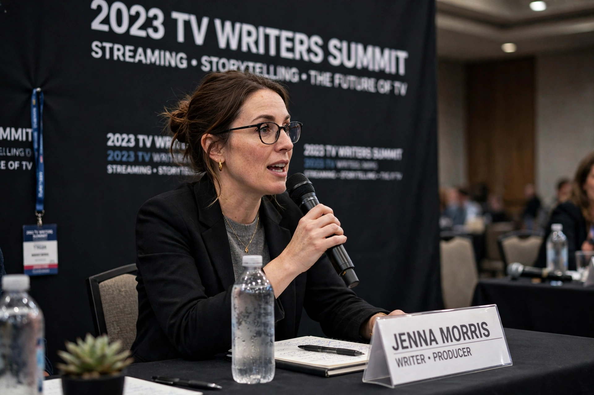

| Born | Ryan J. Condal, 1979/1980, Hasbrouck Heights, New Jersey, U.S. |
|---|---|
| Education | Villanova University |
| Occupation | Screenwriter, producer |
| Known for | House of the Dragon, Colony, Rampage |
Ryan J. Condal (born 1979/1980) is an American screenwriter and producer. He is best known as the co-creator and showrunner of the HBO fantasy series House of the Dragon (2022–present), the prequel to Game of Thrones, and as co-creator of the science-fiction series Colony (2016–2018).
Condal grew up in Hasbrouck Heights, New Jersey, and studied accounting at Villanova University before turning to screenwriting. After working in advertising in New York, he sold scripts that launched his film career, including the screenplays for Hercules (2014) and Rampage (2018), both starring Dwayne Johnson.
With Carlton Cuse he co-created USA Network's alien-occupation drama Colony, which ran for three seasons. A longtime admirer of George R. R. Martin's A Song of Ice and Fire, Condal had pitched a Game of Thrones successor series as early as 2016; HBO commissioned House of the Dragon, adapted from Martin's Fire & Blood, straight to series in October 2019, with Condal and director Miguel Sapochnik as co-showrunners. After Sapochnik stepped back following the first season, Condal became sole showrunner for the second season (2024) and beyond.
Condal has also been attached to other fantasy adaptations, including a film version of the comic Analog and an adaptation of Conan the Barbarian material.
From Wikipedia, the free encyclopedia. Recreated article.